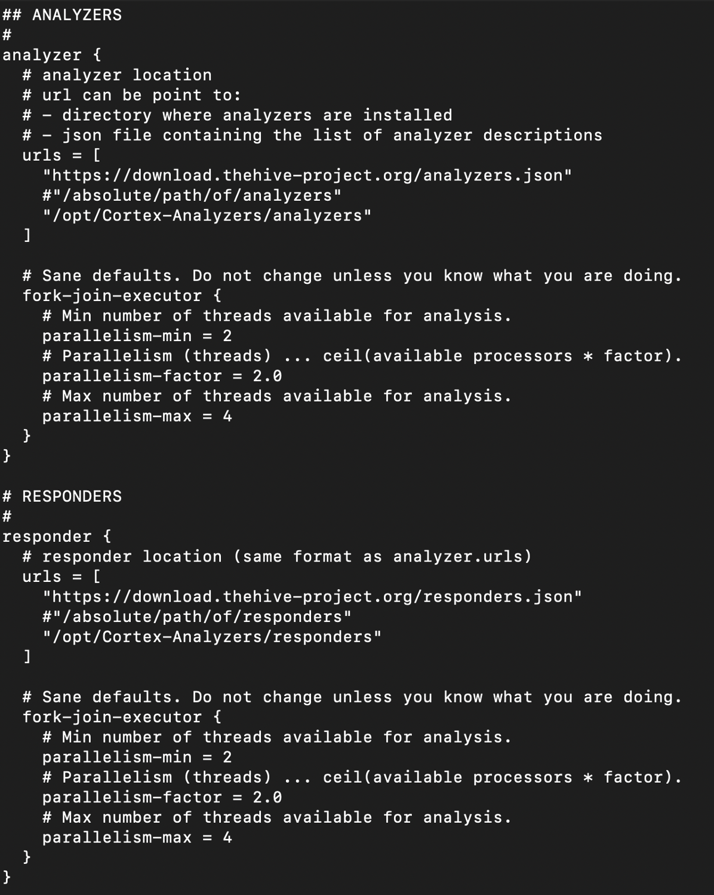
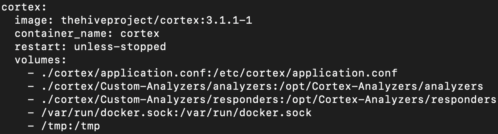

I/ TheHive
TheHive is a Security Incident Response Platform, a case management for the security team. The case management is used to create and track the security incidents, monitor the investigation progress. Centralize the alerts from the SIEM, and allows the collaboration between the analysts. TheHive separates the concept of Alert, Case, Task, and Observable. Every event that has matched a detection rule in the SIEM will be sent as an Alert to TheHive. Alerts are changed into a case if an investigation is needed.
1. Installation
2 ways of installation: local installation (run by services) or docker container.
- Download thehive4:
https://deb.thehive-project.org
Dpkg -I thehive.deb -
Docker container: clone the follow github repository:
https://github.com/HakkYahud/THC
After running env.sh, it will generate .env in the current directory.
PUBLIC_APP_URL = URL TO ACCESS TO TRACECAT
PUBLIC_API_URL = PUBLIC_APP_URL/api
CADDY env var
BASE_DOMAIN = :80
ADDRESS = 0.0.0.0
2. Observables
Observable types are configured in the Administrators space: open Entities Management and select the Observable types tab.

3. Custom field
Custom fields are fields that could be added to multiple cases. Field such as urgency, impact are not present and some organizations require those fields to be filled during an investigation. On TheHive4, connect as Admin and add case custom field.
 As previously mentioned, custom field can be added in a case template. Case is an incident, case templates simplify the case creation by automatically creating the case with the minimum information and item in the case. Information, tasks and custom fields are item present in the case template.
As previously mentioned, custom field can be added in a case template. Case is an incident, case templates simplify the case creation by automatically creating the case with the minimum information and item in the case. Information, tasks and custom fields are item present in the case template.

 Tasks standardize investigation of incidents.
Tasks standardize investigation of incidents.
II/ Cortex
The strength of cortex resides in the actions it can do; analyze and respond. Those two functions, called analyzer and responder are the core of Cortex functioning.
Analyzer: How to analyze observables to add more contextualization and information to the case.
Responder: How to respond and bring an action to stop the threat ?
TheHive and Cortex are working together, TheHive will mainly serve as frontend application and Cortex bring the action done in backend. Actionable buttons are available in TheHive to perform actions that are describe by Cortex.
1. Analyzer / Responder creation
In the system that host TheHive and Cortex application, create a new directory called “Custom-Analyzer” and add the absolute path to the application.conf in cortex directory. Cortex will search on this repository to fetch the analyzers or responders.
In the following example:
- Analyzer directory is found in the /opt/Custom-Analyzers/analyzers
- Responder directory is found in the /opt/Custom-Analyzers/responders

For docker container, Cortex will also fetch the analyzers /opt/Cortex-analyzers/analyzers or /opt/Cortex-Analyzer/responders to search for different custom analyzer or responder.You can map a host folder to /opt/Cortex-Analyzer/analyzer or responder. You can modify the file in your host system, the mapping will act like a file share.
Open docker-compose.yml file and modify it like the screenshot below:

Analyzers and responders require 2 files:- JSON file
- Python script
"name": "Analyzer_GetUser",
"version": "1.0",
"author": "SkallZou",
"url": "https://github.com/TheHive-Project/Cortex-Analyzers",
"license": "AGPL-V3",
"description": "Get user information based on username",
"dataTypeList": ["username"],
"baseConfig": "YahudCorp",
"config": {
"service": "GetUser"
},
"configurationItems": [
{
"name": "key",
"description": "API key for YahudCorporation",
"type": "string",
"multi": false,
"required": true
}],
"registration_required": true,
"subscription_required": false,
"service_homepage": "https://www.skallzou.github.org/",
"service_logo": {
"path": "assets/logo.png",
"caption": "logo"
},
"command": "YahudCorp/analyzer_getUser.py"
}
Every analyzer and responder that have a baseConfiguration for YahudCorp will have the same set of configuration item value. This avoid to fill the value of API key for each analyzer and responder creation.
dataTypeList indicates on what type of observable the analyzer can run. Analyzer run specifically on observable. If an observable type is not present, a custom observable types can be created. Those analyzers can be used for case enrichment. For example, if the observable is a hostname, the analyst would like to know what system is this, a domain controller, a backup server or a simple workstation ?
"command": "YahudCorp/analyzer_getUser.py" indicates the python script to run when the analyzer is being called.